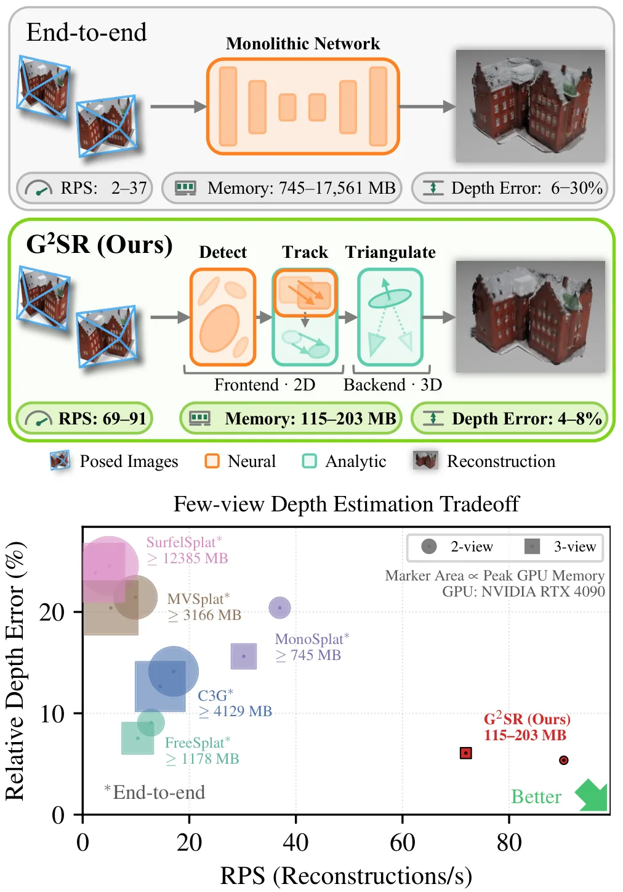
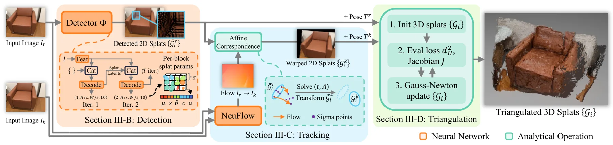
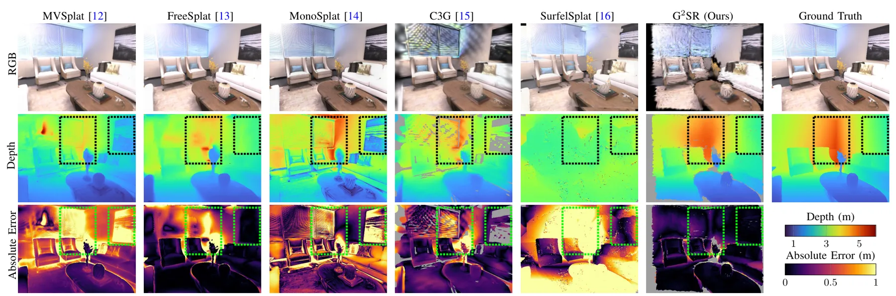
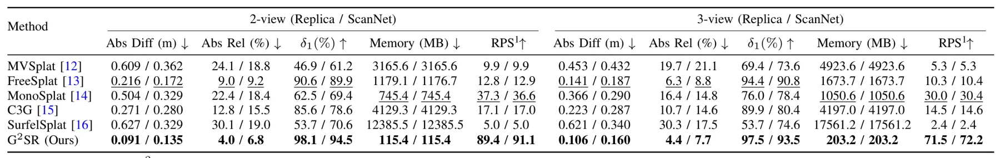
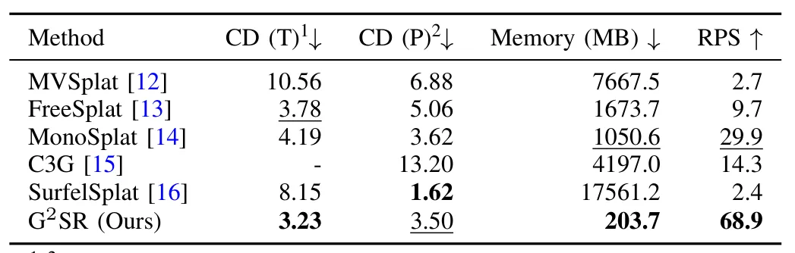
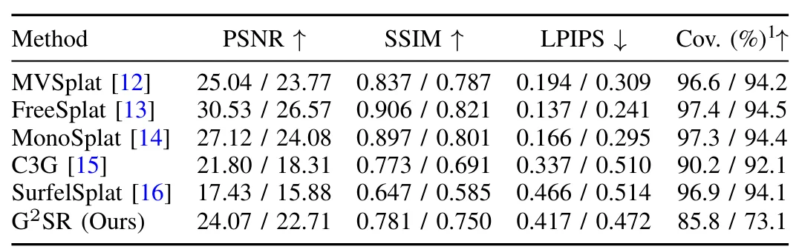

G²SR：快速、低显存的几何 Gaussian 表面重建G$^2$SR: Geometric Methods for Fast and Memory-Efficient Gaussian-based Surface Reconstruction
几何机制清晰，速度、显存与跨数据集结果突出，适合移动机器人在线重建；需测试位姿噪声、遮挡及更多视图扩展。
一句话工作总结
用轻量网络检测跟踪二维 splat，再由解析多视几何三角化出真实尺度三维 Gaussian，实现高速低显存重建。
摘要
G²SR 利用少视图重建中一个良定核心：给定跨视图二维 splat 对应后，可用多视几何解析恢复三维 splat。系统使用轻量神经前端在图像平面检测并跟踪二维 Gaussian splat，再由解析后端把每个对应三角化为具有真实尺度的三维 splat。ScanNet、Replica 和 DTU 实验中，G²SR 的几何精度匹配或超过先进端到端方法；在 384×512 分辨率的 2–3 视图输入上达到每秒 69–89 次重建，仅占 203 MB GPU 显存，内存降低 5–107 倍。
Few-view surface reconstruction recovers the visible surfaces of a scene from a few posed RGB images, providing the 3D models that robots need to explore and interact online. On mobile platforms, the reconstruction must be fast and geometrically accurate while keeping a small memory footprint to ensure safe and efficient operation. 3D Gaussian Splatting (3DGS) offers a high-fidelity scene representation, but building it from a few views is ill-posed, as many distinct surfaces reproduce the same images, making traditional photometric methods prone to "floater" artifacts. End-to-end methods resolve the ambiguity by regressing splats with large, usually Transformer-based, networks that require heavy compute and memory while generalizing poorly to new scenes. We propose G2SR, which exploits a well-posed core of the task: given cross-view 2D splat correspondences, 3D splats follow analytically from multi-view geometry. G2SR employs a lightweight neural frontend to detect and track 2D Gaussian splats on the image plane and an analytic backend to triangulate each into a metric-scale 3D splat. On ScanNet, Replica, and DTU, G2SR matches or exceeds the geometric accuracy of state-of-the-art end-to-end methods while running at 69-89 reconstructions per second within 203 MB of GPU memory (5-107x less) for 2- and 3-view inputs at 384 x 512 resolution, offering a practical path to online Gaussian-based surface reconstruction.
中文解读摘录
图表/页面预览
{kind=link}

{kind=link}

{kind=link}

{kind=link}

{kind=link}

{kind=link}
